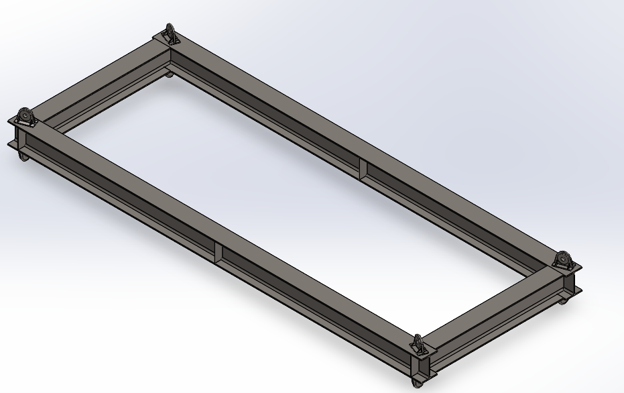
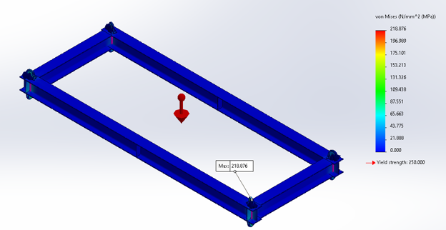
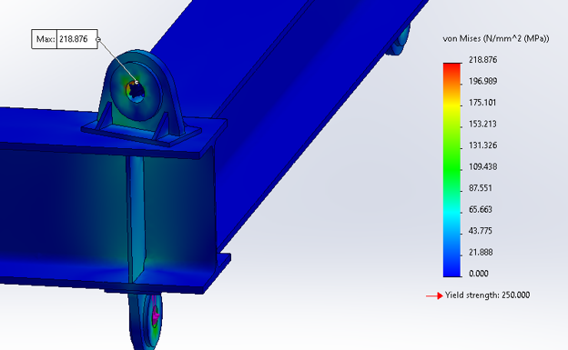
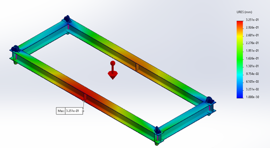
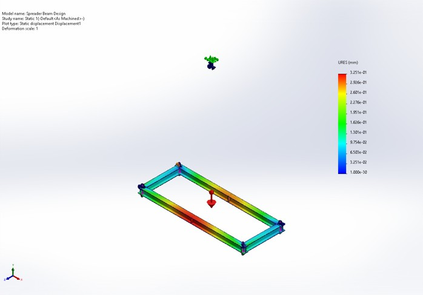
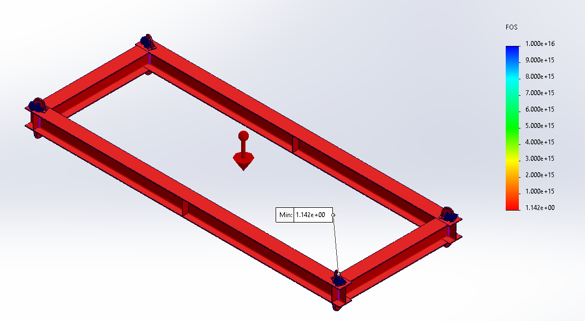
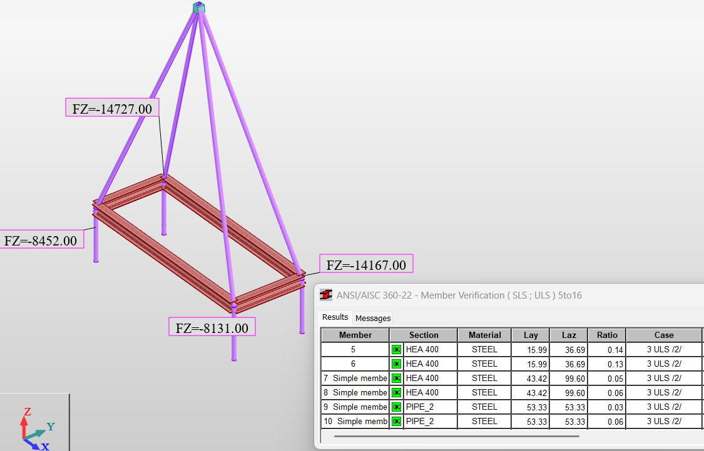

Maximum lifted load defined for the spreader-beam application.
Lifting equipment · Structural analysis · FEA
45.5-Tonne Spreader Beam Design
Structural design and finite element verification of a fabricated spreader beam developed to safely distribute a 45.5-tonne lifted load.

Project overview
This fabricated spreader beam was engineered for a rated lifted load of 45.5 tonnes. The structural verification was performed using 1.6 times the rated load, corresponding to a 72.8-tonne design load, to assess the complete load path through the longitudinal beams, transverse members, lifting points, end plates, and local attachments.
Design demand
Rated and amplified lifting loads
The finite element assessment was based on the amplified design condition.
Multiplier applied to the rated load for structural verification.
Resulting design load used as the verification basis.
Highlighted FEA results
Structural response at the design condition
The principal analysis results are presented below for direct review.
Peak equivalent stress reported at the lifting-point region.
Maximum displacement reported across the analyzed assembly.
Lowest reported factor of safety under the amplified design load.
Analysis approach
- Define the 45.5-tonne rated lifting load and apply the 1.6 design multiplier.
- Develop the structural model and distribute the lifted load through the four lower pickup locations.
- Review the force transfer from the spreader frame into the upper lifting arrangement.
- Verify the principal steel members through structural member analysis.
- Evaluate von Mises stress and identify the governing local stress region.
- Assess total displacement across the full spreader-beam assembly.
- Review the reported minimum factor of safety at the amplified design condition.
Engineering outcome
The combined member analysis and finite element assessment documented the global frame behavior and the localized response around the lifting attachment. The results provide traceable measures of stress, deformation, and design margin for the complete spreader-beam assembly under the 72.8-tonne amplified load case.
Project gallery





